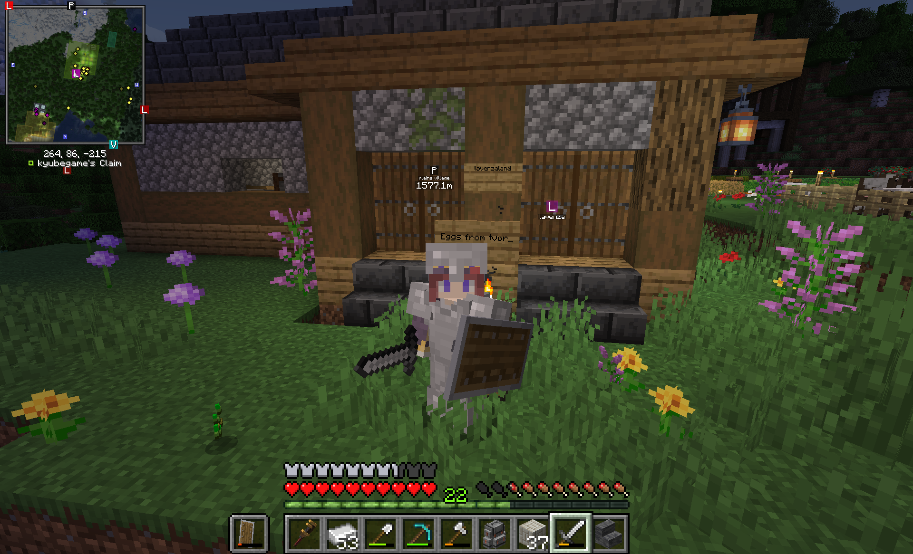

This is where I write stuff. I don't know shit about fuck about computers and coding and things so I hope everyone can just sort of bear with me. As you can see, pictures ARE FINALY working!!!! We will all be friends though despite this fact, okay? We persevere here at lavenzablogwebsitethingy. Never give up!
I Honestly don't know if I'm doing this right but WHO CARES!!! So I wanna have like an introduction thing here. Hi. I am Lavenza but OBVIOUSLY that's not my real name so it doesn't matter too much what I'm called, Lavenza, Tea, Sleepy, Poopypants, I don't care too much. I am a freshman in college and an English major which means that if I make a grammatical error it will be extra humiliating. I like to play Yugioh and Pokemon and I'm kind of a fake gamer cuz that's it. I am bad at most platformers, exceptionally terrible at shooters, puzzle games make me feel stupid when I can't solve them, and strategy games have the same problem. My favorite book ever is Moby-Dick by Herman Melville and I am a type AB blood. I'd also recommend Norwegian Wood by Haruki Murakami. Titles of books and movies should be in itallics. I'm running out of things to say about myself which is... maybe a little bad since this whole thing is supposed to be about me? I'm an orphan! And I'm the youngest in my family. And I like Naruto and One Piece and I would like a girlfriend some day! I'm right handed too! That's about everything for now maybe hopefully...
These are my blog posts. They are recountings of my life. They are not daily. They are not weekly. They are not monthly. They are whenever I have the urge to write.
4/23/25 The First of Many (hopefully)
These should hopefully be shorter than full posts. They will just be thoughts on certain subjects or topics at any given time, hence the name.
4/24/26 On... being an orphan